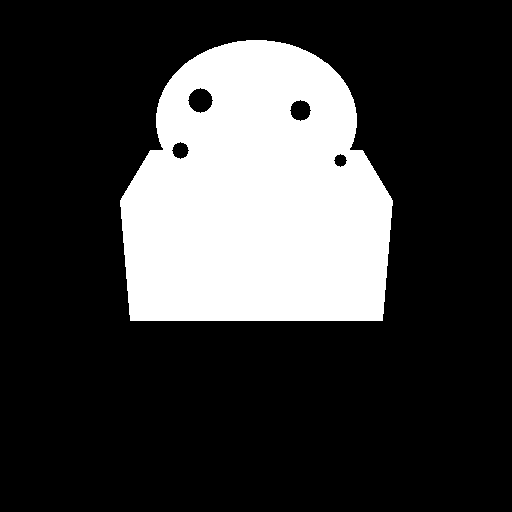
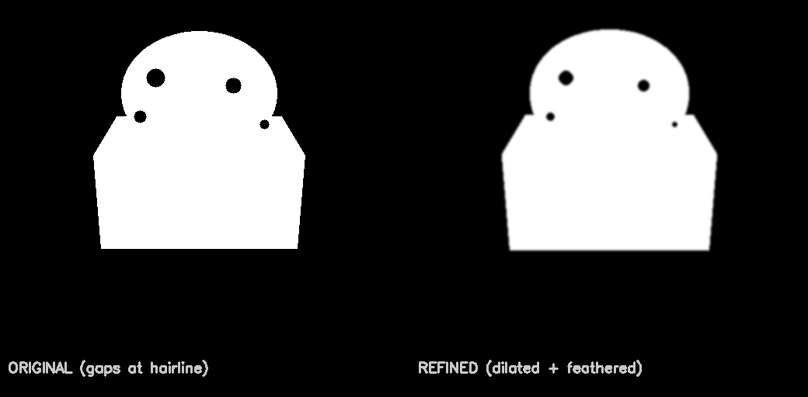

This test demonstrates the mask post-processing that fixes common segmentation issues:
Config used: dilation_kernel=5, iterations=1, feather_size=7

Notice the gaps at the hairline and jagged edges
Gaps filled, edges softened for natural blending

These settings can be adjusted in server/config.ts or via environment variables:
MASK_DILATION_KERNEL - Size of dilation (default: 5, larger = more expansion)MASK_DILATION_ITERATIONS - Number of passes (default: 1)MASK_FEATHER_SIZE - Blur amount for soft edges (default: 7)MASK_DEBUG_OVERLAY - Generate red overlay for verification (default: false)